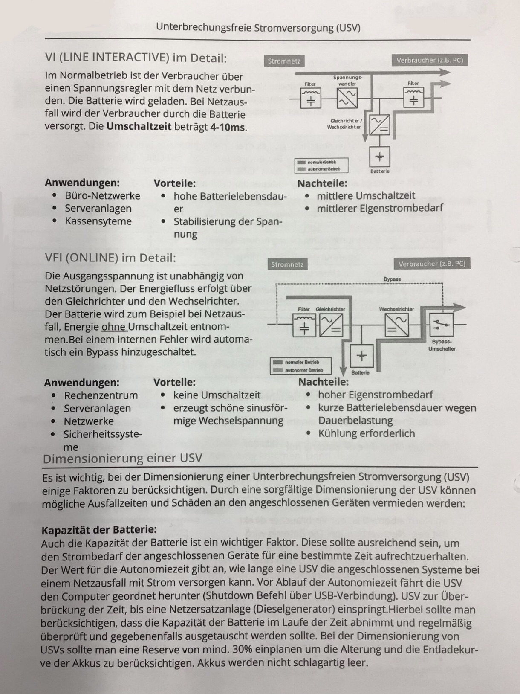
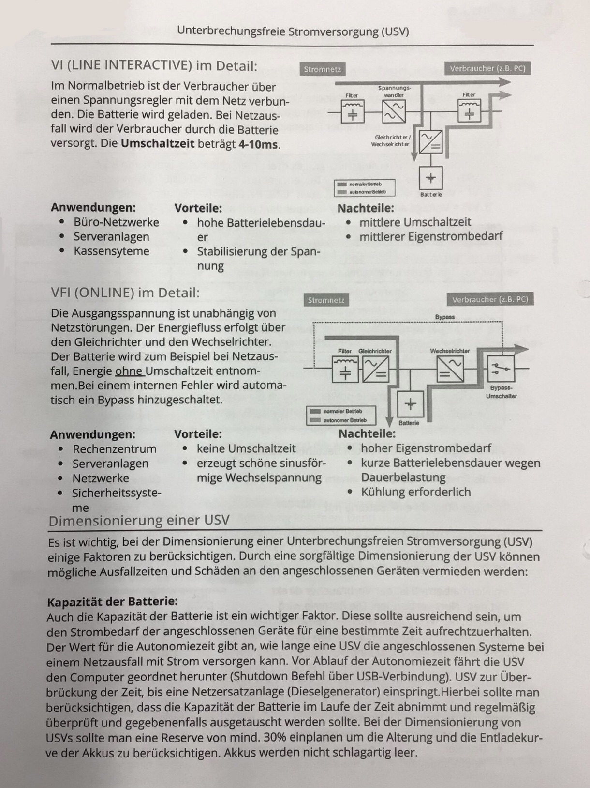
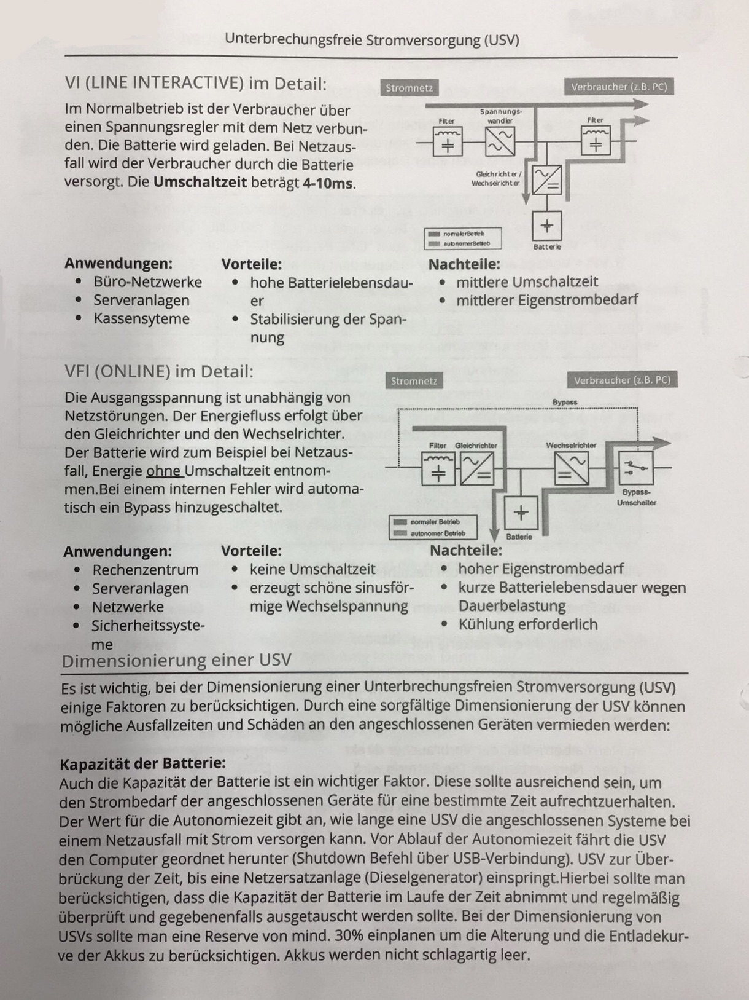
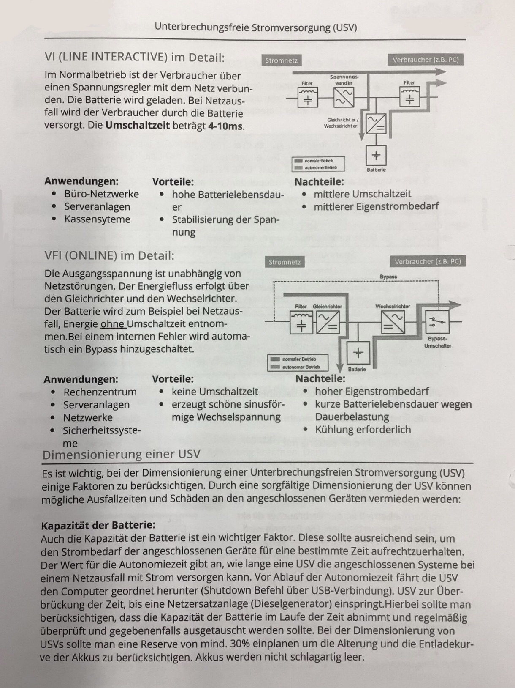
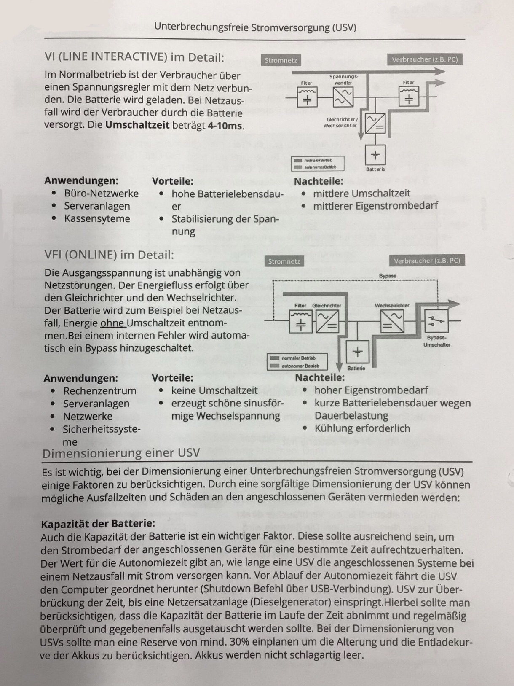

Skip to content
UNYKAD
Unterbrechungsfreie Stromversorgung (USV)
Initializing search
Home
How to git
Networking
Linux
Electrical Engineering
Software Development
BWL
Economics
GK
Notes
UNYKAD
Home
How to git
How to git
Einführung in GIT
Repository verwalten
Networking
Networking
Bluetooth
Cyber-physische Systeme
Dynamic Host Configuration Protocol (DHCP)
E-Mail-Authentifizierungsprotokolle
Grundkonfiguration für einen PC/Client
Identitäts und Zugriffsmanagment (IAM)
Loopback
MAC-Adressen
OSI-Modell
Ping
RAID – Redundant Array of Independent Disks
Routing
WLAN
Ethernet
Ethernet
Address Resolution Protocol (ARP)
Collision and Broadcast Domains
CSMA (Carrier Sense Multiple Access)
Ethernet-Frame
Duplex and Ethernet Speed
IPv4
IPv4
Private IPv4-Adressen
IPv4 Troubleshooting - Statische Routen
VLSM
Dynamisches Routing
Dynamisches Routing
OSPF
OSPF
OSPF - Alter Aufschrieb
RIP
RIP
Routing Information Protocol (RIP)
IPv6
IPv6
IPv6 Default Gateway des Routers
IPv6-Adressen
Neighbor Discovery Protocol
Kabel
Kabel
Allgemeines zu Kabeln
Glasfaserkabel
Strukturierte Verkabelung
Twisted Pair Kabel
Router
Router
Cisco Router
VRF (Virtual Routing and Forwarding)
Switching
Switching
Port-Channeling
Spanning Tree Protocol (STP)
Switch Basics
Windows
Windows
SSH in Windows aktivieren (Client & Server)
Windows Hello for Business
Windows Authentication
Active Directory
Active Directory
Active Directory Services
Einstieg in Active Directory (AD)
Sicherheitsbezeichner und Sicherheitsprinzipale
Entra ID
Entra ID
Conditional Access Policies
Einstieg in Entra ID
Entra ID User Accounts
Microsoft Entra-Produktfamilie
Linux
Linux
Arch
Arch
Arch Linux einrichten
MariaDB Installation & Einrichtung
Electrical Engineering
Electrical Engineering
Unterbrechungsfreie Stromversorgung (USV)
Schutzmaßnahmen im TN-C-S-Netz
Stromkosten und Leistung berechnen
Software Development
Software Development
Libraries and Frameworks
C++
C++
Datentypen
Präzedenztabelle der Operatoren
Rust
Rust
Data Types in Rust
BWL
BWL
Deckungsbeitragsrechnung
Distributionspolitik
Kaufvertragsstörungen
Kostenartenrechnung
Kostenstellenrechnung
Nichtigkeit und Anfechtbarkeit bei Rechtsgeschäften
Projektmanagement
Rechts- und Geschäftsfähigkeit
Economics
Economics
Allgemeine Geschäftsbedingungen (AGB)
Annahme- und Zahlungsverzug
Mahnverfahren
Verbraucherschutz
Zahlungsmöglichkeiten
GK
GK
Demokratie
Notes
Notes
IT Glossar
Hexadezimalsystem
IT-Security
Welche Dokus fehlen oder müssen noch verändert werden?
Subnetzmasken
Switch Befehle
Verkapselung
Raspy Minecraft Server
Raspy Minecraft Server
DDNS
Java initialisieren
Pironman 5
Raspy
Screen
Unterbrechungsfreie Stromversorgung (USV)

Back to top
 

 
